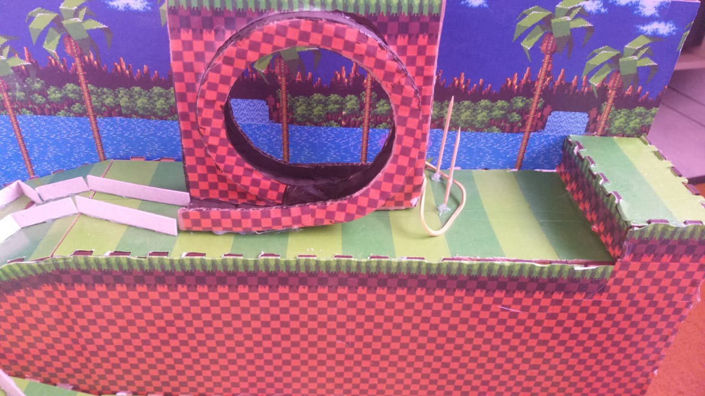

PROJETO RATIMBUM
O projeto teve como tema o universo do Sonic, sendo desenvolvido como uma maquete interativa onde uma sequência de eventos físicos e eletrônicos era acionada automaticamente por um botão inicial. Inspirado nas fases do jogo, o percurso incluía obstáculos, loops e efeitos sonoros que representavam a velocidade e energia características do personagem. O trabalho exigiu competências em programação aplicada à eletrônica, automação de mecanismos, lógica sequencial, sincronização de sensores e motores e design criativo, resultando em uma experiência visual e funcional que unia eletrônica, movimento e narrativa temática.